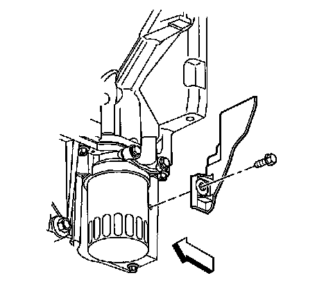
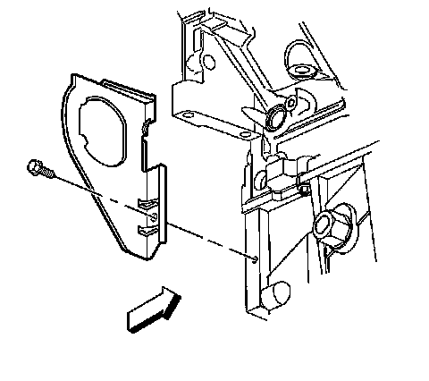
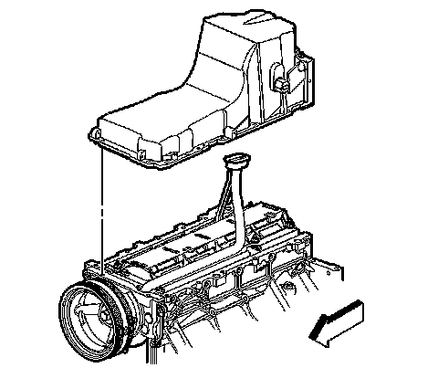
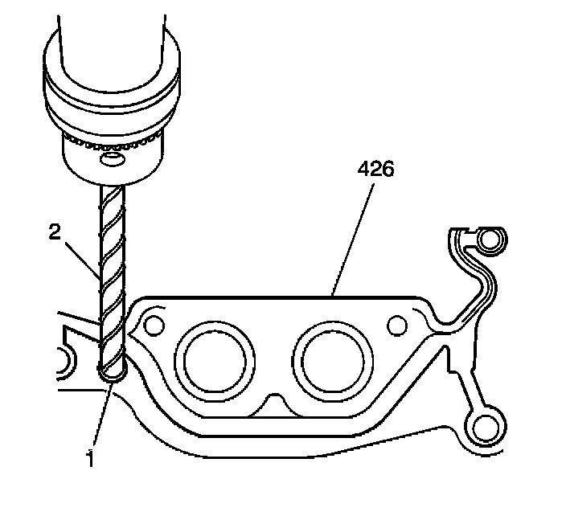

22. Oil Pan Removal
Oil Pan Removal

Important:
^ The original oil pan gasket is retained and aligned to the oil pan by rivets. When installing a new gasket, it is not necessary to install new oil pan gasket rivets.
^ DO NOT use the oil pan gasket again. When installing the oil pan, install a NEW oil pan gasket.
^ It is not necessary to remove the oil level indicator switch prior to oil pan removal. Remove the oil level indicator switch, if service is required.
Remove the left closeout cover and bolt.

1. Remove the right closeout cover and bolt.

2. Remove the oil indicator switch from the oil pan, if required.

3. Remove the oil pan bolts.
4. Remove the oil pan.

Important:
^ DO NOT allow foreign material to enter the oil passages of the oil pan. Cap or cover the openings, as required.
^ Use care not to gouge, score, or damage the oil pan sealing surface.
Drill (2) out the oil pan gasket retaining rivets (1), if required.
5. Remove the gasket (426) from the pan.
6. Discard the gasket and rivets.